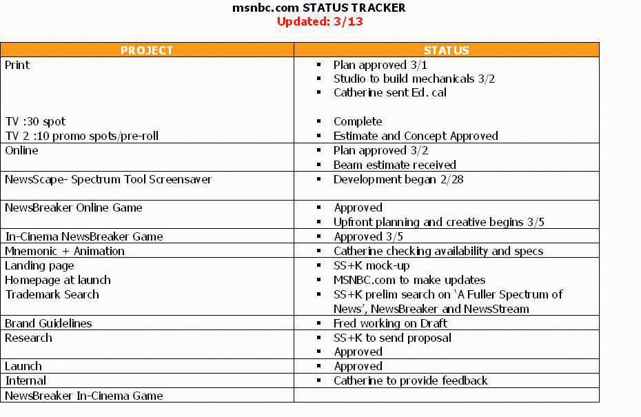

The campaign consisted of many interrelated pieces. All of them tied back to the major campaign objective of building a solid and positive brand image for msnbc.com. SS+K and its partners accomplished this by designing multiple executions using multiple platforms, from conventional print to innovations including the first-ever in-cinema game that allowed the audience to participate in the execution.
In order to keep track of all these elements, SS+K referred to a status chart, a tool many agencies use to keep track of the progress of the many moving parts involved in a campaign. Status charts are tailored to specific account or campaign needs and are managed by the account management and project management teams.
Figure 13.2
The status chart for the week of March 13, 2007. This summarized multiple elements, the current status, and what needed to happen next in order to keep the project moving toward completion.
Here’s what all the pieces of the campaign looked like at launch.
The first part of the work centered on the logo.